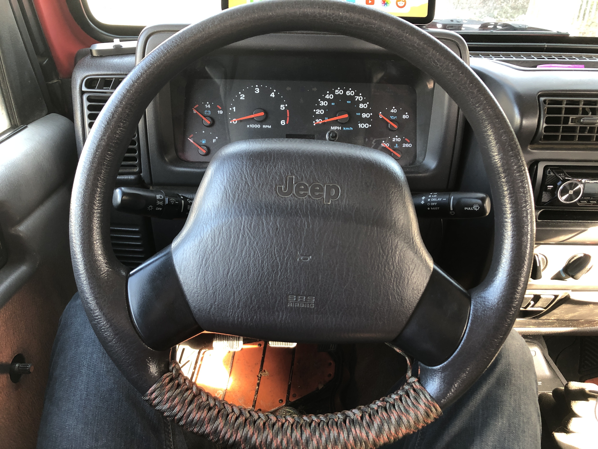
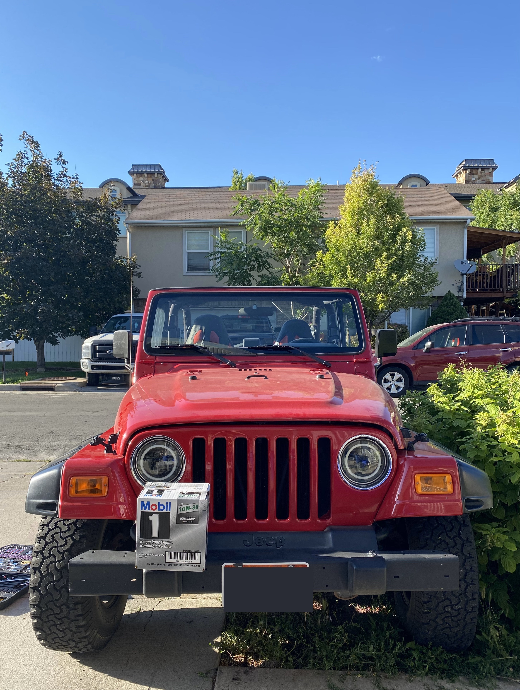
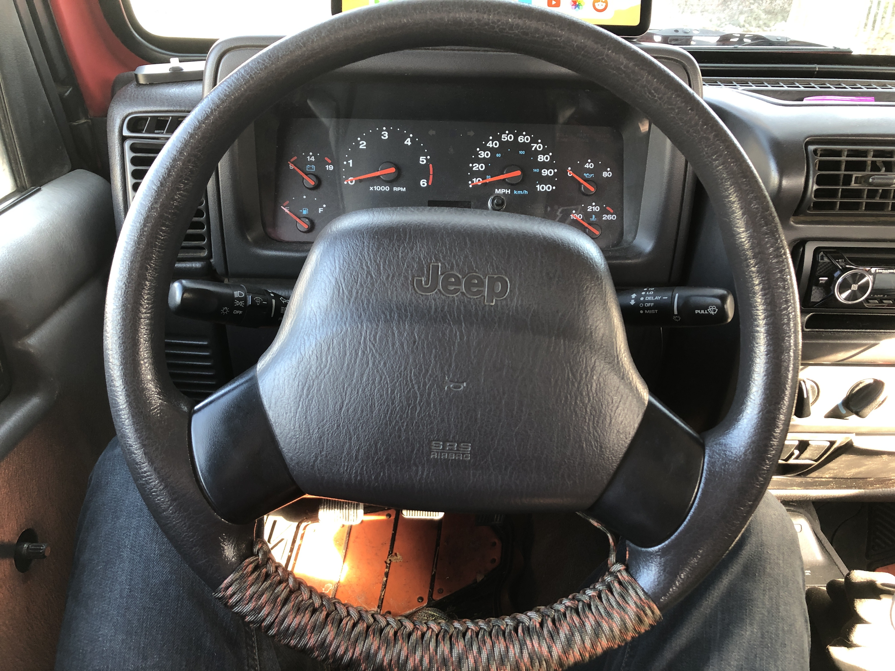
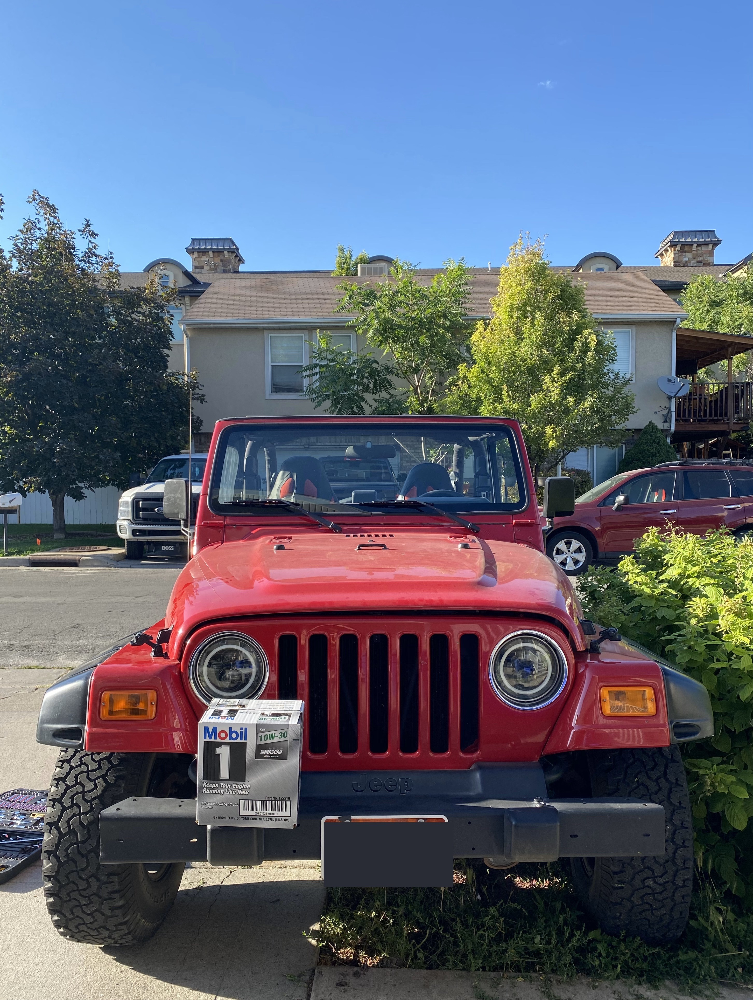

History:
Purchased from the original owner, Tony, who babied and waxed the hell out of this Classic!
Came with original soft-top, lights, stereo, and a bunch of other 2002 goodies! I needed to replaced the OG gas cap on week 1 of ownership!
I could tell that Tony kept this thing in the garage and probably only drove it on sundays. He traded it for a newer Jeep with an automatic transmission
Stats!
- Starting Mileage: 44,250
- Current Mileage: 54,000
Modifications
- Full-Doors
Purchased from a rolled Jeep in Provo, Ut.
- Passenger door was crunched and needs bending.
- Sanded down the Blue, rust reformed, and covered in black Bed-liner.
- I have had one black door for over a year now, and I kind of like being unique!
- Stereo System
The Original Mexican stereo system had to go!
- Sony amplified head receiver with dedicated power connection to battery. Pushes each speaker to 55w and adds dual bluetooth connection!
- Replaced Sound bar with a pair of Polk Audio 6.5in marine audio speakers.
- Front dash speakers got upgraded to Kicker 5.25" with an adapter panel and some sound dampening foam.
- Rockford Fosgate P10-300W powered sub with remote turn on and direct battery connection.
- Headlights
Hallogens were dim and dull!
- LED conversion adapter was simple and came with lights!
- Daytime running lights with halo surround
- Integrated amber turn signals
 


